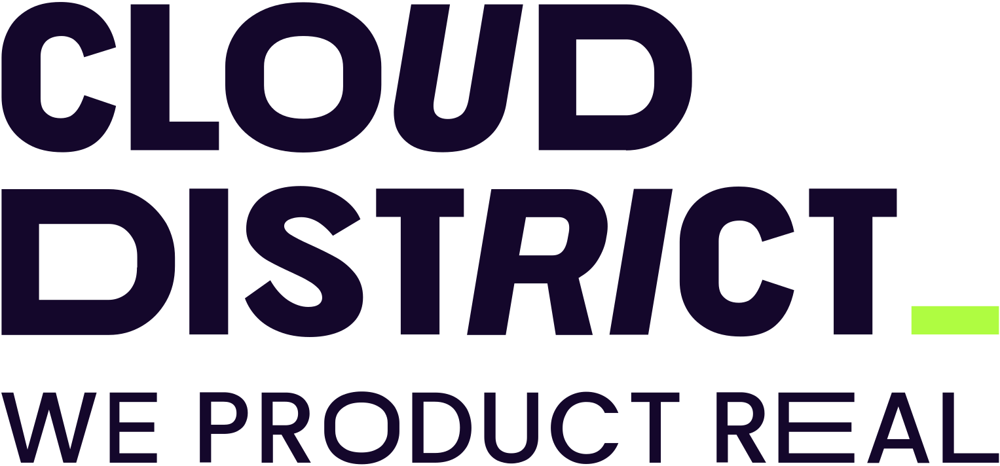

00
VSK dashboard
en construcción.
CHANGE PACK
esperando actividad
○ ESPERANDO
00:00:00
Proyectos


PREPARAR PROYECTO
Terminal
en directo.
conectando…
A−
A+
⤢
↻
PASO ACTUAL
Cuando el agente narre un paso con
vsk step
, aparecerá aquí.
CHANGE PACKS · DUEÑO, EVIDENCIA Y SIGUIENTE ACCIÓN
GATES DE LA FASE
SEMÁFORO
ZOMBIS
SALIDA DEL HARNESS
Elementos
Tipos y verbos
prevista
construida
en obras
externa
CAMBIO
—
Proyectos
para empezar.
Cerrar
RECIENTES
ABRIR O CREAR UNA CARPETA
Abrir esta carpeta
Crear y abrir